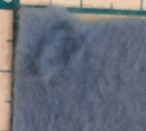

研究日誌
タイトル：デジタルで服の「切る」ワークショップ
日時：11月2日(土) 13時~16時30分
場所：ファボラボ平塚(神奈川大学湘南ひらつかキャンパス1号館2階)
目的：レーザーカッターやカッティングマシーンの使い方を体験したうえで、衣服制作にデジタルファブリケーションを活かす可能性を模索する
内容
紙に書いたデータをスキャナーで読み取り、データの作成を行う
レーザーカッターやカッティングマシーンで実際に素材を切って使い方を体験
実際に使ったことを通して、衣服制作にどのように生かせるかをデスカッション
持ち物:レーザーカッターやカッティングマシーンで切ってみたい素材
参加費用:無料
対象：被服制作は型紙からひと通り作ることができるが、デジタルファブリケーションを初めて体験する人
人数：4人まで
9/23-9/29:概要作成。布、レーザーカットデータ収集
9/30-10/6：布、レーザーカットでーて収集
10/7-10/13：布、カッティングマシーンデータ収集
10/14-10/20：布、カッティングマシーンデータ収集
10/21-10/27：ワークショップでの必要なコトモノ確認、簡単にできるレーザーカット、カッティングマシーンカッティングマシーンを使ったレシピ(この週までに考えておく)
10/28-11/1：リハーサル(実際に機会を動かすかは未定だが、誰かに使い方を説明して伝わりやすい方法を探っておく。必要なものの抜けがないか確認する)
11/2：当日
レーザーカッターを使って、布を切り、どんな設定だったらいいかを考えていく。
リボン。
| 番号 | スピード | パワー | 評価 |
|---|---|---|---|
| ① | 1 | 5 | 悪くはないが、切った後に少しほつれが出る。 |
| ② | 1 | 6 | 最適。ほつれなし。 |
| ③ | 1 | 7 | 切り口が焦げる。 |

綿のシーチング。②～④ではあまり差が表れない。それぞれ図形の中心部分は触っていると簡単に壊れてしまった。切った直後ではほつれは確認できない。
| 番号 | スピード | パワー | 評価 |
|---|---|---|---|
| ① | 1 | 5 | 切れない。 |
| ② | 1 | 8 | 最適。奇麗に切れる。 |
| ③ | 1 | 7 | ②と大差なし。 |
| ④ | 1 | 6 | ②と大差なし。 |
こちらはシーチング材を彫刻した。
| 番号 | スピード | パワー | 評価 |
|---|---|---|---|
| ① | 50 | 50 | 彫刻できない。中身がほぐれる。 |
| ② | 50 | 40 | 中身がほぐれる。 |
| ③ | 50 | 30 | 裏に彫刻の絵が出てしまう。少し強い。 |
| ④ | 50 | 20 | 薄い。輪郭がぼやける。 |
| ⑤ | 50 | 25 | 良さげ。 |
| ⑥ | 60 | 25 | 最適。裏にも透けない。 |
| ⑦ | 70 | 25 | 薄いが輪郭がはっきりしている。 |
毛のある生地。ハサミで切るときは布を裏にして布部分だけを切ることがポイントとされている。なのでこの生地は裏返して切ってある。またフワフワしているため、焦点を合わせるときは、布の裏面と焦点が合うようにした。
| 番号 | スピード | パワー | 評価 |
|---|---|---|---|
| ① | 1 | 6 | 切れない |
| ② | 1 | 8 | 最適。切った部分が取り外しやすい。 |
| ③ | 1 | 7 | 切れる。②と大差なし。少し取り外しにくい。 |

シャツを作るときに使った布。薄い。しわになりにくいため、ポリエステルとの混紡かポリエステル。
| 番号 | スピード | パワー | 評価 |
|---|---|---|---|
| ① | 1 | 5 | 最適。奇麗に切れる。 |
| ② | 1 | 3 | 切れない。 |
| ③ | 1 | 6 | 若干焦げる。 |

フェルト。織物でないので元々ほつれない。
| 番号 | スピード | パワー | 評価 |
|---|---|---|---|
| ① | 1 | 10 | 焦げる。 |
| ② | 1 | 9 | 焦げる |
| ③ | 1 | 7 | 切れない。 |
| ④ | 1 | 8 | 悪くはない。が少し焦げる。 |
| ⑤ | 1.5 | 8 | |
| ⑥ | 1.25 | 7 | |
| ⑦ | 1.5 | 9 | |
| ⑧ | 1.3 | 9 | |
| ⑨ | 1.5 | 10 | |
| ⑩ | 1.4 | 10 | これが一番最適かな…。でも焦げるため何とも言えない。 |
| ⑪ | 1.7 | 10 | 切れない |

帆布だと思われる。丈夫なためよくカバンに使われる。
| 番号 | スピード | パワー | 評価 |
|---|---|---|---|
| ① | 1 | 15 | 最適。とても綺麗に切れる。切ったところが飛んでく。 |
| ② | 1 | 14 | 悪くないが、中心部分が上手くいかない。 |
| ③ | 1 | 13 | ②と大差なし。 |
| ④ | 1 | 10 | ②と大差なし。 |
| ⑤ | 1 | 8 | 切れない。 |
| ⑥ | 1 | 9 | 切ったところが上手く取り外せない。 |

おそらくチノ・クロス。切り口からしてたぶん綿。
| 番号 | スピード | パワー | 評価 | |
|---|---|---|---|---|
| ① | 1 | 8 | 切れるが裏が少し焦げる。 | |
| ② | 1 | 7 | 裏が焦げるが、悪くはない。最適？ | |
| ③ | 1 | 6 | ②と大差なし。しかし、布が曲がっていた場合に切れないことがある。 | |
| ④ | 1 | 10 | 裏が焦げる。 | |
| ⑤ | 1 | 12 | ④と同じく。 | |
| ⑥ | 1 | 5 | 切れない。 |

裏面。白っぽい布は焦げたところが目立つ。

ちりめん素材。切り口からして、ちりめんの安い方、ポリエステルだろう。
| 番号 | スピード | パワー | 評価 |
|---|---|---|---|
| ① | 1 | 6 | 切れない |
| ② | 1 | 7 | 最適。切った部分が取り外しやすい。 |
| ③ | 1 | 8 | 切れる。②と大差なし。 |
ジーンズ。
| 番号 | スピード | パワー | 評価 |
|---|---|---|---|
| ① | 1 | 8 | 切れない |
| ② | 1 | 10 | 切れるが、周りがとてもほつれる。 |
| ③ | 1 | 12 | 切れる。②よりほつれない。 |
| ④ | 1 | 15 | ③と大差なし。 |
| ⑤ | 1 | 14 | ③と大差なし。 |

ジーンズを彫刻すると後ろに染料がついてしまうことが分かった。
サテンリボン
| 番号 | スピード | パワー | 評価 | |
|---|---|---|---|---|
| ① | 1 | 3 | 切れない。 | |
| ② | 1 | 4 | 切れない。 | |
| ③ | 1 | 5 | 切れる。若干切り取りが甘い。 | |
| ④ | 1 | 6 | 切れる。最適。 | |
| ⑤ | 1 | 7 | 切れるけど、切り口が溶けているから、緻密に作るには向いてない。 |
こういう風に、リボンに文字を入れることもできる。(トロテックの受け売り)名前入れたら、プレゼントのラッピングが特別なものになるかも…とか。
ニット。伸びるためハサミで切りにくい素材の一つ。
| 番号 | スピード | パワー | 評価 | |
|---|---|---|---|---|
| ① | 1 | 15 | 前にもやった通り、溶ける。 | |
| ② | 1 | 10 | ①と同じく溶ける。 | |
| ③ | 1 | 8 | たぶん最適。 | |
| ④ | 1 | 5 | 切れないし、なぜか下半分切れてない。 | |
| ⑤ | 1 | 6 | 切り抜けない。 | |
| ⑥ | 1 | 7 | 切れるが、中のパーツを取り出しづらい。 |
試してみたが、どうにも布が切れない。刃が滑ってしまうみたいだ。カッティングプロッタCE6000の方は、切り始めの部分の穴が開くだけで、切れる予感がしない。切れないとやる気まで下がってしまう。こちらの機械では、ハトロン紙など型紙を切る際に使えるのかもしれない。
ハトロン紙を切ってみた。
| 番号 | カット圧 | 速さ(㎝/秒) | 評価 |
|---|---|---|---|
| ① | 17 | 30 | ぐしゃぐしゃになる。 |
| ② | 12 | 10 | カット圧を下げることで、刃があまり素材にあたらないようにしてみたが、さらにひどい。速さは、細かい図案ならゆっくりの方が正確に出ると思った。 |
| ③ | 17 | 1 | ②と大差なし。カット圧が低いとうまくいかなかったから、戻してみた。細かい図案はゆっくりで切ってみようとしたが上手くいかない。 |
| ④ | 117 | 30 | 図案を3倍にしてみた。小さすぎるとうまく切れないのかもしれない。難しい。 |
スキャンカットの方は若干切れるが、こちらも刃が滑って切れない。調べてみると、粘着性の強いカット用のシートを引くことが進められている。試しに両面テープで貼ってみたが、これでも滑ってしまう。難しい。しかし、イラストレーターを使わずに、実際に書いた図面をそのまま切ることができるため、こちらの方がワークショップ向きかもしれない。
マスキングテープで貼り付けると、マスキングテープがきれいに切れた。刃の跡が布に少しついた。

フェルトをカット用のシートに張り付けて切ってみた。刃が通った後は弱くなっているので、無理やり切り抜く(？)ことはできた。しかし、これでは使えない。刃の長さは12にした。

ジーンズを切った。これも刃が滑って切れない。

薄手の布は、アイロン接着テープをつけて布を丈夫にすることで切ることができるらしい。アイロン接着テープ…接着芯のことのようだ。しかし、実際やってみるとうーん。うまくいかない。刃を直接当てて布を切るのは向かないのだろうか。
紙に絵をかいて、スキャンしてそれをスキャンカットで切り抜いた。若干刃が滑っている感じもするが、図面通りに着ることができる。これは便利。
| 時間 | 予定 | 備考 |
|---|---|---|
| 12:40～ | 集合 | 荷物置き場は1－201 |
| 13：00～ | 開始 | 定刻にならなくても集合し次第開始 |
| 13：00～(10分程度) | ワークショップの説明と自己紹介 | ワークショップの流れ、機材の説明等 |
| 13：10～(30分程度) | 図案の作成(ワーク①) | コピー用紙？に図案を描いてもらう。 |
| 30 | ぐしゃぐしゃになる。 | |
| 13：40～(30程度) | 切り取り(ワーク②) | カッティングプロッタもしくはスキャンカット、レーザーカッターを使って図案を切り取る |
| 14：20～(15程度) | ㎞休憩 | |
| 14：35～ | デスカッション(ワーク③) | デジタルで切るということは、ほかにどんな作品を生むことができるか。 |
| 16：30 | 終了 | |
| 17：00 | 完全撤退 |
布の素材よりも厚さにレーザーカッターの設定は強く影響を受ける。化学繊維の方は溶けて切れるから、パワーは同じ厚さの天然繊維より低い傾向。スピードが1をデフォルトにしている理由だが、細かい部分も切りやすいのと、作業のスピードを両立できるのではないかということ、鱗の服を作った時にこのスピードの設定で行ったことが挙げられる。